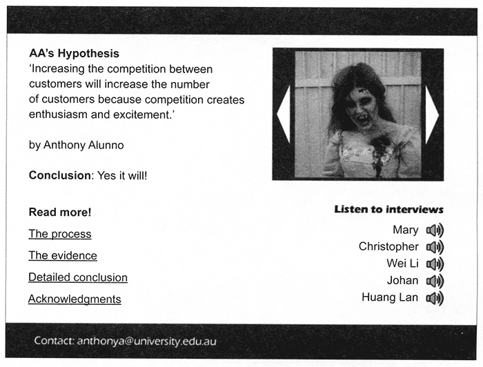

|
|
Examiners' report general comments - to be added when available
|
SECTION A - Multiple-choice questions
Instructions for Section A
Answer all questions in pencil on the answer sheet provided for multiple-choice questions.
Choose the response that is correct or that best answers the question.
A correct answer scores 1, an incorrect answer scores 0.
Marks will not be deducted for incorrect answers.
No marks will be given if more than one
answer is completed for any question |
| |
Use the following information to answer Questions 1—5.
Baum's Tree Care (BTC) offers tree pruning and removal services throughout Victoria. The diagram below shows a user flow diagram for BTC's website. Visitors to the site can obtain a quote by filling in a form on the home page.
|
| A1 |
Question 1
When on the home page, to successfully post a review on BTC's website, a visitor to the site must
A. click 'Submit'.
B. click 'Review', enter their name, email and postcode, and click 'Submit'.
C. enter their name, email and postcode, write their review comments and click 'Submit'.
D. click 'Review', enter their name, email and postcode, write their review comments and click
'Submit'.
Answer is .
Explain.
% of the state got this right. (info to be added later) |
| A2 |
Question 2
To protect the privacy of the data that visitors enter into BTC's website, the website must at least
A. encrypt the data on the home page and review page.
B. force visitors to change their passwords regularly.
C. encrypt the data entered into the 'Quick quote' form.
D. include a link to BTC's privacy policy on the home page.
Answer is .
Explain.
% of the state got this right. |
| A3 |
Question 3
The user flow diagram clearly shows that the functionality of BTC's website has been influenced by the design principles of
A. space and balance.
B. alignment and navigation.
C. ease of use and robustness.
D. error tolerance and navigation.
Answer is .
Explain.
% of the state got this right. |
| A4 |
Question 4
The data entered by the visitor into the 'Quick quote' form will be stored in a database table.
The most suitable data type for the
A. PhoneNumber field is numeric because it is a number.
B. EmailAddress field is text because any character is allowed.
C. Postcode field is Boolean because it is either entered or not entered.
D. Visitors Name field is text because only letters of the alphabet are allowed.
Answer is .
Explain.
% of the state got this right. |
| A5 |
Question 5
The error messages shown in the user flow diagram are generated by a validation technique that checks for a blank entry. Another validation technique that could be used is a 'length check', where the data entered is checked to make sure it has the correct number of characters.
For which fields would a length check be most appropriate?
A. Postcode and Phone Number
B. Email Address and Visitors_Name
C. Phone Number and Email_Address
D. Email Address, Postcode and Phone_Number
Answer is .
Explain.
% of the state got this right. |
| A6 |
Question 6
Primary data sources include
A. interviews, observations and surveys.
B. interviews, observations and statistics.
C. interviews, statistics and news websites.
D. interviews, observations and news websites.
Answer is .
Explain.
% of the state got this right.
|
| A7 |
Question 7
Which one of the following statements is a reasonable hypothesis?
A. Computing: Informatics is the most popular VCE subject.
B. If I brush my teeth every day, I will not develop cavities.
C. I study Computing: Informatics because it is the most popular VCE subject.
D. To prevent cavities from developing, eat healthy food.
Answer is .
Explain.
% of the state got this right. |
| A8 |
Question 8
Intellectual property rights are protected through the use of
A. logins, trademarks and copyright.
B. trademarks, copyright and patents.
C. patents, security protocols and logins.
D. copyright, patents and security protocols.
Answer is .
Explain.
% of the state got this right. |
| A9 |
Question 9
Which one of the following criteria can be used to check the authenticity of data?
A. Is the data useful?
B. Is the data error free?
C. Is the data up to date?
D. Is the data from a reliable source?
Answer is .
Explain.
% of the state got this right.
|
| A10 |
Question 10
Which of the following do Gantt charts show most clearly?
A. multiple tasks and timelines
B. the constraints on a project
C. the consequences if a project is delayed
D. all the people involved in a project and their requirements
Answer is .
Explain.
% of the state got this right. |
| A11 |
Question 11
Digital system components that are used to input data include a
A. keyboard, mouse and printer.
B. keyboard, mouse and scanner.
C. keyboard, printer and hard disk drive.
D. keyboard, touch screen and hard disk drive.
Answer is .
Explain.
% of the state got this right.
|
| A12 |
Question 12
Which one of the following is a technique that can be used to code qualitative data?
A. Sort the data into numerical order.
B. List all the nouns and verbs in the data.
C. Organise the data into categories or themes.
D. Search the data for the largest or lowest values.
Answer is .
Explain.
% of the state got this right. |
| A13 |
Question 13
One method that could be used to evaluate the effectiveness of a multimodal online solution in communicating a conclusion is to
A. make sure that graphs and charts display properly.
B. ask someone to check that the conclusion is correct.
C. show the solution to a group of people and interview them afterwards.
D. calculate the number of bytes required to communicate the conclusion.
Answer is .
Explain.
% of the state got this right. |
| A14 |
Question 14
Which one of the following evaluation criteria is suitable for evaluating a design idea?
A. Is the information presented accurate?
B. Does the solution confirm or refute the hypothesis?
C. Can end users perform tasks within the expected timeframes?
D. Are the relationships between various components of the solution clear?
Answer is .
Explain.
% of the state got this right. |
| A15 |
Question 15
A website is under construction. The purpose of the website is to provide educational material to a worldwide audience. One of its web pages will include a video clip. The video file will be hosted on the same server as the website, not on an external video-hosting site.
The first test of the video page's functionality should be to check that the
A. download time is reasonable.
B. video plays on all major web browsers.
C. video plays when its control is clicked on.
D. video plays on all desktop computers, tablet computers and mobile phones.
Answer is .
Explain.
% of the state got this right.
|
| A16 |
Question 16
The Privacy and Data Protection Act 2014 governs how
A. the Victorian public sector deals with individuals' health information.
B. private companies in Victoria deal with individuals' health information.
C. the Victorian public sector deals with individuals' personal information.
D. private companies in Victoria deal with individuals' personal information.
Answer is .
Explain.
% of the state got this right. |
| |
Use the following information to answer Questions 17 and 18.
BAC Architects is a large architectural company in competition with several other organisations to win contracts for major building projects. It has offices in Melbourne, Sydney and Perth. Each office has an information system consisting of a number of desktop computers in a wired network with a fileserver and a Webserver. There is also a wi-fi connection for staff devices. An example of their set-up is shown in the diagram below.
BAC Architects' information management strategy has five main goals:
1. to maximise the ease of sharing data
2. to minimise the risk of attack from malware
3. to maximise the ease of version control of files
4. to minimise the opportunities for employees to steal data
5. to minimise the loss of valuable company data in the event of a disaster |
| A17 |
Question 17
BAC Architects' information management strategy includes the policy statement: 'Staff must store company data on the fileserver, not on desktop computer hard drives, removable storage devices (for example, mobile phones, USB memory devices, laptops) or in email accounts.'
Which set of goals does this rule most directly apply to?
A.1,2,3
B.1,3,5
C.
2,4,5
D.
3,4,5
Answer is .
Explain.
% of the state got this right. |
| A18 |
Question 18
To better meet the goals of its information management strategy, BAC Architects is considering replacing the local fileserver in each office with a single cloud storage facility for the whole company.
For BAC Architects, cloud storage will
A. decrease the opportunity for employees to steal data.
B. improve sharing within the company and always be available.
C. simplify backup procedures and give BAC Architects more control over its data.
D. simplify backup procedures and provide quick access to data after a disaster.
Answer is .
Explain.
% of the state got this right.
|
| A19 |
Question 19
The main reason for having a disaster recovery plan for an information system is to
A. prevent a disaster from occurring.
B. minimise system downtime and data loss in the event of a disaster.
C. make sure everyone knows what to do in the event of a disaster.
D. guarantee that backups are carried out every day and stored off site.
Answer is .
Explain.
% of the state got this right. |
| A20 |
Question 20
An organisation is developing criteria for evaluating its new information management strategy for the storage and disposal of data.
What is the most important factor for the organisation to take into consideration when developing these criteria?
A. the organisation's legal requirements
B. the needs of the organisation's stakeholders
C. the goals of the organisation's information system
D. the cost of the organisation's disaster recovery plan
Answer is .
Explain.
% of the state got this right.
|
|
Overall for section A
|
|
|
SECTION B - short answer questions
Instructions for Section B
Answer all questions in the spaces provided. |
B1
|
Question 1 (2 marks)
Explain how qualitative data can be used to support quantitative data. Provide an example to illustrate your answer.
Average mark - /
|
B2
|
Question 2 (4 marks)
a. Explain how legal issues can be a constraint on the acquisition and use of secondary data. 2 marks
b. Outline a process that could allow for the use and publication of secondary data. 2 marks
Average mark - /
|
B3
|
Question 3 (3 marks)
A science project is being set up to determine what kinds of lizards there are in Australia and how many live in towns and cities. People who take part in the project will be asked to enter sightings into a web page. More than one sighting can be entered at a time.
a. The following table shows an example of the data that could be collected from a form on the web page.
| date |
postcode |
state |
commonName |
speciesName |
| 04-Apr |
3850 |
Vic |
Blue tongue
Garden skink
Bougainville's skink |
Tiliqua scincoides scincoides
Lampropholis guichenoti
Lerista bougainvillii |
State why this data is not in first normal form. 1 mark
b. The database designer has brought the data into second normal form, as shown in the following table structures.
Species Table: primary key: speciesName
Sightings Table: primary key: sightingID
| sightingID |
date |
postcode |
state |
speciesName |
Explain why the Sightings Table is not in third normal form. 2 marks
Average mark - /
|
| B4 |
Question 4 (4 marks)
Foodie's Restaurant has been open for two months and is proving to be a popular and successful eating establishment. Richard, the owner, has captured the online reviews of his restaurant. He would like to know whether the day of the week makes a difference to his customers' experience, particularly in relation to food, service or atmosphere.
Here is a sample of the online reviews:
• 29 Sep 2017 - Great food and ambience. The combination of flavours and textures was fantastic and the
wines were very good. Service was extremely professional and friendly.
• 2 Oct 2017 - Worth every cent. The food and service are amazing; can't fault a thing. We will be back.
• 2 Oct 2017 - It's a little small, but cosy. One of my favourites as the food is absolutely delicious!
• 19 Oct 2017 - Went here with the family and was not disappointed. Food and service were outstanding.
Will be back.
Explain how Richard could manipulate the review data to find patterns that might answer his question. Use examples to support your explanation.
Average mark - / |
| B5 |
Question 5 (2 marks)
Rocks'R'Us is a geological mapping company that uses satellite imagery to highlight areas of Far North Queensland that may have valuable minerals in the ground.
Explain why having timely data would be less important to Rocks'R'Us than having accurate data.
Average mark - /
|
| B6 |
Question 6 (4 marks)
Jimbo's Real Estate Company is a large agency with an annual turnover that exceeds $7 million.
Currently the company stores all of its corporate information on a reputable cloud server based in
Germany. The following information is stored:
• A - all staff details, including salaries and earnings from sales
• B - all sales-related items
• C - all purchaser details
• D - all seller details
The cloud storage company says that it keeps all details secure. All of Jimbo's staff members have equal access to all files stored in the cloud.
a. Outline a possible ethical dilemma related to point A above. 1 mark
b. Outline a possible solution to the ethical dilemma outlined in part a. 1 mark
c. When Jimbo's switched over to cloud storage, its manager thought a disaster recovery plan would no longer be needed.
Outline two important aspects of a disaster recovery plan that the manager still needs toconsider even if Jimbo's has cloud storage. 2 marks
Average mark - / |
B7
|
Question 7 (11 marks)
The Locals' Gym is adding a new section to its website. Each month, the gym will publish on a new page an article providing advice about physical wellbeing and fitness.
At the end of each month, the web page will be linked to an index page so visitors to the site can still find the article if they wish.
The layout of each monthly web page will be the same. A sketch of the layout has been created and is shown above.
a. With regard to the text that appears between A and B on the web page, identify two conventions that should be followed and suggest how each should be applied. 4 marks
b. Apart from gender inclusiveness, explain two characteristics that the information on the new web page should have if it is to educate worldwide audiences. 4 marks
c. The new section will require a suitable folder structure and file-naming conventions so that different files can be found quickly.
i. In the space provided below, draw a suitable folder structure for storing the files associated with the new section of the website. Clearly label your diagram.
ii. Describe a file-naming convention and use an example to show how the convention would be helpful in finding files quickly. 2 marks.
Average mark - / |
|
|
|
|
Case study
Insert for Section C - Case study
Please remove from the centre of this book during reading time.
Use the case study provided in the insert to answer the questions in this section. Answers must apply to the case study.
Zombie Pursuit
Zombie Pursuit is a small entertainment facility on the outskirts of Melbourne. Its owners, Flynn and Elena, have converted a warehouse into a multistorey, escape-room-style facility where customers pay to fight zombies. Customers can choose to play in groups of up to 10 and can arm themselves with laser weapons. Although only one game can be played at a time, three different types of games are offered during the week. Prior to entering the playing area, customers are required to register their details on the Zombie Pursuit website and choose a unique nickname. This ensures their details are saved to the Zombie Pursuit database. They are then issued with their weapon and told the basic rules of the game:
• If you zap a zombie, it is out of the game and you get points.
• If a zombie splats green gloop on you, you get 'eaten', which means your weapon is inactive for 60 seconds and you lose points.
• Physical violence against the zombies is strictly prohibited.
Zombie Pursuit currently has 30 employees consisting of 25 actors who play the zombies, two cleaners, one party host and two food and beverage attendants.
Issue
At present, Zombie Pursuit's website just provides visitors with information about Zombie Pursuit. Currently all bookings are done via the telephone.
Elena would like to modify the company's website so that customers can see available time slots, make a booking and pay in advance.
One of the actors, Anthony, is currently completing a Master of Business degree at university and is required to complete a research project as part of his course. Anthony has a hypothesis: 'Increasing the competition between customers will increase the number of customers because competition creates enthusiasm and excitement. '
Anthony thinks that one way to increase competition between Zombie Pursuit's customers would be to create a monthly contest where the players with the five best scores from that month are invited back to create a 'super team' and take on the zombies. The highest scorer from that team then wins a prize.
Flynn gives Anthony permission to use the company as part of his research project. For the first part of the project, the university requires Anthony to submit his hypothesis and evidence that supports or refutes it in a multimodal online report. The report is due in June and, if it does not provide a clear, well-argued and evidenced-based conclusion, Anthony will not be able to proceed with the rest of his project.
Zombie Pursuit's information system
The information system is built around a local area network (LAN) connecting:
• a fileserver, which holds the company's database and all other important records, and has a DVD burner attached to it
• two desktop computers, with attached printers, that are used for all administrative tasks
• two tablet computers that are used by customers to register themselves and choose a nickname.
The physical layout of the LAN and other components and features is shown in the diagram below.
Zombie Pursuit's current information management practices
• Backup procedure
The fileserver is never shut down. It automatically runs a backup every night at midnight. This is achieved by copying all the important files onto a DVD. Each evening, before leaving for home, Elena replaces the previous night's backup DVD with a blank. She stores the backup DVD in a locked cupboard in the office and then goes home.
• Disposal procedure
To save on cupboard space, Elena only keeps the 10 most recent backup DVDs. When she places the latest backup DVD in the cupboard, she removes the oldest one and puts it into the office's rubbish bin.
• Software security controls
The fileserver runs an antivirus program. The program scans any file when the file is opened and is also scheduled to run a full virus scan at 2 am every morning. Before running the scan, the antivirus program automatically checks for updates to the virus definitions.
The two desktop computers have no virus detection software installed.
END OF INSERT
END OF INSERT
|
Instructions for Section C
Please remove from the centre of this book during reading time.
Use the case study provided in the insert to answer the questions in this section. Answers must apply to the case study.
Answer all questions in the spaces provided.
|
C1
|
Question 1 (4 marks)
In a meeting with his university lecturer, Anthony was told that his lecturer had studied the decline of pinball machine usage in the 1980s. The lecturer offered Anthony the use of the data that was collected.
Anthony is not sure whether he should accept or decline the offer. He is concerned about the integrity of the data and is aware of criteria that can be used to check its integrity.
a. Identify one criterion that could be used to support accepting the offer and explain how the
criterion does this. 2 marks
Criterion ...
Explanation
b. Identify a different criterion that could be used to support declining the offer and explain how
the criterion does this. 2 marks
Criterion
Explanation
Average mark - /
|
C2
|
Question 2 (3 marks)
During the meeting, Anthony's lecturer also mentioned a survey recently completed by the university's sports and activities coordinator. Anthony has a friend who works in the Sports Department. This friend said he could access the data for Anthony.
Discuss the legal implications of using this data for Anthony and his friend.
Average mark - /
|
C3
|
Question 3 (2 marks)
Since starting his project, Anthony has been interviewing players after they finish a game, asking them questions about the idea of playing competitively. Anthony has been recording all the answers on his mobile phone. For example, one of his questions was, 'How keen are you to have a super league and play competitively?', to which players gave answers such as, 'Yeah, heaps', 'A little bit, maybe' and 'Just to prove I'm the best anyway'.
Anthony has more than 100 voice recordings. He now wants to analyse this data to discover if there are any themes that might help him understand the effect that competition might have on attendance.
Describe one way in which Anthony could easily enter the data into a spreadsheet so that he can manipulate it.
Average mark - /
|
C4
|
Question 4 (3 marks)
Anthony has completed his analysis of the data and formed a conclusion about his hypothesis. He now has to create his online report for the university.
a. Describe one technique that Anthony could use to generate design ideas for his multimodal
online report. 1 mark
Suggest one criterion that Anthony could use to evaluate which of his design ideas he should choose. Justify your answer. 2 marks
Criterion _
Justification
Average mark - /
|
| |
Use the following information to answer Questions 5 and 6.
Anthony has constructed the first page of his online report. It is shown in the following screenshot.
 |
C5
|
Question 5 (4 marks)
Based on the screenshot, identify two design principles related to appearance that Anthony has used in the creation of this web page. Provide evidence of each.
Design principle 1
Evidence ...
Design principle 2
Evidence
Average mark - /
|
C6
|
Question 6 (3 marks)
The arrows on either side of the image in the screenshot are buttons that will allow a visitor to Anthony's web page to click back and forth through a gallery of about 20 photographs.
Outline a set of tests that Anthony should perform to check that the arrow buttons operate as intended.
Average mark - /
|
C7
|
Question 7 (4 marks)
During the project, Anthony monitored his progress by recording actual starting and ending times for each task on the Gantt chart he had prepared at the beginning. The project is now complete and Anthony is reviewing his plan. One portion of the Gantt chart and its key are shown below.
Average mark - /
|
C8
|
Question 8 (5 marks)
Elena has started creating a mock-up of a new web page using a simple drawing program. The purpose of the web page is to allow customers to make a booking online. She has printed her mock-up and written annotations in brackets on it.
She still has to add controls that meet the following three requirements:
1. Obtain the number of people (minimum one, maximum 10).
2. Obtain a contact number (must be entered) and email address (optional).
3. Allow a customer to proceed to payment if all of the required data has been entered.
a. Complete Elena's mock-up on page 21 so that it shows the controls needed to meet the three requirements listed above. When drawing the controls:
• clearly indicate the type of control with an annotation
• make sure the purpose of the control is clear
• take into account the web page's appearance.
b. By referring to appropriate design principles related to functionality, justify the type of control used to meet requirement 1.
Average mark - /
|
C9
|
Question 9 (7 marks)
Flynn has agreed to Anthony's idea about creating a competition between players. Together they have drawn an entity-relationship (ER) diagram for the part of the database that keeps statistics about every game a player has played in.

a. The ContactNumber attribute will contain a phone number.
State why Flynn and Anthony chose to make its data type 'Text'. 1 mark
b. What data type should Flynn and Anthony choose for ZombiesZapped and TimesEaten - text,
numeric or Boolean? Give a reason for your answer. 1 mark
c. Write a word to indicate the cardinality that should be shown at X and at Y. 2 marks
At X
At Y
d. The ER diagram shows that when Flynn sets up the entity PlayerStatistics as a table in a relational database, he must add two more fields to act as foreign keys.
State the two fields that should be added as foreign keys and explain their purpose. 3 marks
Field 1
Field 2
Purpose
Average mark - /
|
C10
|
Question 10 (4 marks)
Flynn and Anthony have constructed the database tables needed to run the player competition.
Anthony is constructing a number of queries that will extract the required information. He represents the design of the queries using input-process-output (IPO) charts.
a. Anthony would like one of the competitions to be only for players who are under 18 years of age on 1 January of the current year. The IPO chart below shows a query that he will use to filter out any player who is too old. 2 marks
| Input |
CurrentYear Process |
Output |
| PlayerlD |
Calculate field: Age = ThisYear - YearOfBirth |
PlayerlD for all eligible players |
| DateOfBirth |
Filter with criterion: Age < 18 |
Anthony has written the first line of a testing table for the query.
Complete the table below so that two other important conditions are tested. Assume CurrentYear is 2017.
| Condition being tested |
Data input |
Expected result of query |
| player too old |
PlayerlD 12345
YearOfBirth 1998 |
PlayerlD not included in output |
| |
|
|
| |
|
|
b. To create a 'super team', Anthony needs a query that returns each player's score for a game.
In each game, players get five points for every zombie they zap, but lose 10 points every time they are 'eaten'.
Complete the process column in the IPO chart below by showing what the query needs to do
to obtain the required output. 2 marks
| Input |
Process |
Output |
PlayerlD
ZombiesZapped
TimesEaten |
|
PlayerID
PlayerScoreForGame |
Average mark - /
|
C11
|
Question 11 (3 marks)
The case study outlines the security controls used by Zombie Pursuit.
a. Identify one physical security control used to protect Zombie Pursuit's information system.
b. Identify one weakness in the physical security provided for Zombie Pursuit's information system. Explain the threat it presents.
Average mark - / |
C12
|
Question 12 (4 marks)
Elena's friend Isha is the owner of a store selling costumes. She runs a single desktop computer system connected to a cash register. At the end of each day, accounting software is used to keep the accounts up to date. All of the shop's data is stored on the hard disk of the desktop computer. At the end of each week, Isha copies all the data to cloud storage.
a. Identify one strength of Zombie Pursuit's backup procedure compared with Isha's. Explain why it is a strength.
b. Identify one strength of Isha's backup procedure compared with Zombie Pursuit's. Explain why it is a strength.
Average mark - / |
C13
|
Question 13 (11 marks)
Isha's store has been in operation for a number of years. In that time, she has had many customers, suppliers and product lines. To prevent her records from becoming cluttered with out-of-date data, in July each year Isha deletes any records of customers, suppliers or product lines that have not been accessed for five years. Isha's computer is kept in an office at the back of the store and is rarely turned off. It is connected to the internet by a simple broadband modem. Isha runs a complete virus scan on her computer every week.
For each of the areas of information management shown below, decide who (Zombie Pursuit or Isha) has the more effective procedures and justify your answer.
• Disposal of data ,
• Protection from malware
Average mark - /
|
END OF QUESTION AND ANSWER BOOK
|
|
|
* Many thanks for Steven Wright for letting me steal his joke.
Back to the IT Lecture Notes index
Back to the last page you visited
Created 10 November 2016
Last changed:
November 17, 2017 1:13 PM
Original Content © Mark Kelly 2017
Images and questions are © Victorian Curriculum
and Assessment Authority 2016.
Reproduced here with permission for educational purposes.
Thanks, VCAA!
VCE IT Lecture notes © Mark Kelly


Section C summary